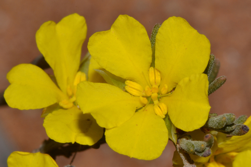

Dilleniaceae
Dillenia Family
Dilleniaceae is a family of flowering plants comprising trees, shrubs, and lianas, found throughout the tropics and subtropics, particularly diverse in Australasia. They are often recognized by their simple, alternate leaves with prominent, parallel secondary veins, and flowers typically bearing numerous stamens and often separate carpels. Phylogenetically, Dilleniaceae stands alone in the order Dilleniales, representing an early branch of the core eudicots.
Overview
The Dilleniaceae family includes about 10-12 genera and 400-500 species, with the genus Hibbertia accounting for the majority of species diversity, especially in Australia. The family is widespread across tropical and subtropical regions of the world, inhabiting diverse environments from rainforests to savannas and woodlands.
Key characteristics include the often woody habit (trees, shrubs, lianas), alternate simple leaves frequently showing strong, parallel secondary veins that give a pleated appearance, and flowers that are typically 5-parted with numerous stamens. A notable feature is the tendency for the carpels (female reproductive units) to be free from each other (apocarpous) or only fused at the base, considered an ancestral trait among eudicots. The fruit type varies but often consists of follicles enclosed by the persistent calyx, and seeds frequently possess a fleshy aril. Phylogenetically, Dilleniaceae occupies a unique position as the sole family in the order Dilleniales, sister to the massive clade containing most core eudicots (Superrosids and Superasterids).
Some species like Dillenia indica (Elephant Apple) are known for their edible fruits or are cultivated ornamentally (e.g., Hibbertia species).
Quick Facts
- Scientific Name: Dilleniaceae Salisb.
- Common Name: Dillenia Family
- Number of Genera: Approximately 10-12
- Number of Species: Approximately 400-500
- Distribution: Pantropical and subtropical, extending into temperate Australia.
- Evolutionary Group: Angiosperms - Eudicots - Core Eudicots - Dilleniales
- Habit: Trees, shrubs, lianas.
Key Characteristics
Growth Form and Habit
Plants are typically woody, ranging from trees and shrubs to scrambling subshrubs or robust lianas (woody vines, e.g., Tetracera).
Leaves
Leaves are usually arranged alternately (rarely opposite). They are simple, with margins often toothed (serrate or dentate), sometimes entire or lobed. A characteristic feature is the venation: the secondary veins are typically strong, straight, and parallel, running directly to the margin (craspedodromous venation), often making the leaf appear pleated or corrugated. Leaves are often rough to the touch (scabrous) due to silica bodies or hairs. Stipules are generally absent, but sometimes the petiole base is winged, resembling stipules.
Inflorescence
Flowers can be solitary, or more commonly arranged in terminal or axillary clusters such as cymes, panicles, or racemes.
Flowers
Flowers are often showy, usually bisexual, and radially symmetrical (actinomorphic). They are typically 5-merous, but the number of parts can vary.
- Calyx: Usually consists of 5 sepals (ranging from 3 to 20), which are free, often unequal in size, and typically persistent, sometimes becoming fleshy or enlarged and enclosing the fruit.
- Corolla: Usually consists of 5 petals (sometimes fewer or more, rarely absent), which are free, often yellow or white. Petals are frequently crumpled in bud and tend to fall off quickly after the flower opens (caducous).
- Androecium: Stamens are typically numerous (often more than 15, but can be as few as 1), usually free, and may arise centrifugally (from the center outwards) or spirally. Anthers usually open by apical pores or short slits, less commonly by longitudinal slits. Staminodes (sterile stamens) are sometimes present.
- Gynoecium: Features a superior ovary composed of (1-)2-20 carpels. A key characteristic is that the carpels are often free from each other (apocarpous) or fused only at their base (basally syncarpous). Each carpel typically contains one to many ovules. Styles are usually free, as many as the carpels, often diverging. Placentation is basal, marginal, or axile (if carpels are fused basally).
Fruits and Seeds
The fruit type depends on the gynoecium structure. If carpels are free, the fruit is typically an aggregate of follicles (dry fruits opening along one seam) or sometimes achenes. If carpels are fused, the fruit can be berry-like or a capsule. The fruit is very often enclosed or surrounded by the persistent, sometimes fleshy or enlarged, calyx. Seeds frequently possess a conspicuous, often brightly colored, fleshy appendage called an aril. Seeds contain oily endosperm.
Chemical Characteristics
Plants often contain tannins and ellagic acid. Silica bodies are common in epidermal cells, contributing to the rough texture of leaves in some species (e.g., Curatella, Tetracera). Alkaloids and saponins are also reported in some members.
Field Identification
Identifying Dilleniaceae often involves recognizing their characteristic leaves and floral features:
Primary Identification Features
- Habit: Trees, shrubs, or lianas, primarily tropical/subtropical.
- Alternate, simple leaves with prominent parallel veins: Look for leaves with strong, straight secondary veins running to the margin, often giving a pleated or corrugated appearance. Margins frequently toothed.
- Flowers with numerous stamens: Flowers (often yellow or white) typically have many stamens, often more than 15.
- Carpels often free or nearly free: The female parts (carpels) in the center of the flower are frequently separate or only joined at the base (check developing or mature fruit structure too).
- Fruit often enclosed by persistent calyx: Look for developing or mature fruits (often follicles) surrounded by the remaining sepals.
- Arillate seeds: Seeds often have a fleshy, colored aril (may require dissecting fruit).
Secondary Identification Features
- Rough leaf texture (in some): Leaves can feel like sandpaper (Curatella, Tetracera).
- Caducous petals: Flower petals often fall off very quickly.
- Winged petioles (in some): Stipules may be represented by wings along the petiole.
Seasonal Identification Tips
Vegetative features, especially leaves, are useful year-round:
- Year-round: Habit, leaf arrangement (alternate), leaf shape (simple), and especially the characteristic venation pattern are key identifiers. Rough leaf texture is persistent.
- Flowering Season (Varies): Look for flowers with numerous stamens and often separate carpels. Note petal color and their tendency to fall quickly.
- Fruiting Season: The aggregate of follicles (or other fruit types) enclosed by the persistent calyx is diagnostic. Look for arillate seeds if possible.
Common Confusion Points
Distinguishing Dilleniaceae from families with similar features:
- Ochnaceae: Also tropical trees/shrubs with simple alternate leaves (often serrated) and sometimes numerous stamens, but typically have stipules, different venation, often a gynobasic style (arising from base of ovary lobes), and fruit often drupelets on an enlarged receptacle.
- Theaceae (Tea family): Trees/shrubs with simple alternate leaves (often serrated), flowers often showy with numerous stamens, but carpels are typically fused into a single pistil with a superior ovary developing into a capsule.
- Clusiaceae (Guttiferae): Trees/shrubs often with opposite leaves (though some alternate), typically entire margins, often with latex, flowers with numerous stamens, but carpels fused into a single pistil, fruit often a berry or capsule.
- Focus on the combination: Alternate Simple Leaves + Strong Parallel Secondary Veins (plicate look) + Numerous Stamens + Carpels Often Free + Fruit (often follicles) Enclosed by Persistent Calyx + Arillate Seeds = Dilleniaceae.
Field Guide Quick Reference
Look For:
- Tree, shrub, or liana
- Leaves: Alternate, Simple, often Toothed
- Prominent parallel secondary veins (plicate)
- Flowers: Often yellow/white, 5-parted
- Stamens: Numerous
- Carpels: Often free or basally fused (2-20)
- Ovary superior
- Fruit: Often follicles enclosed by persistent calyx
- Seeds: Often arillate
Key Variations:
- Leaf margins (toothed vs. entire)
- Number of carpels varies
- Fruit type (follicles, achenes, berry, capsule)
- Habit (tree vs. shrub vs. liana)
Notable Examples
The family includes ecologically important tropical plants and some cultivated species:

Dillenia indica
Elephant Apple
A large evergreen tree native to Southeast Asia. Known for its large white flowers and large fruit consisting of carpels enclosed within thick, fleshy sepals. The fruit pulp is edible but acidic.

Hibbertia scandens
Snake Vine / Guinea Flower
A common climbing or scrambling shrub native to eastern Australia. Has large, showy yellow flowers with numerous stamens often arranged to one side. Representative of the largest genus, Hibbertia.

Tetracera species
Water Vines
A pantropical genus of lianas. Stems often contain potable water. Leaves are typically very rough (scabrous). Flowers small, in panicles; fruit follicles enclosed by persistent sepals.

Curatella americana
Sandpaper Tree / Chaparro
A small, fire-resistant tree common in Neotropical savannas (cerrado, llanos). Known for its extremely rough leaves, historically used as sandpaper. Flowers white or pinkish, fruit capsule-like enclosed by sepals.
Phylogeny and Classification
Dilleniaceae occupies a unique and important position in the angiosperm phylogeny. It is classified as the sole family in the order Dilleniales. Molecular phylogenetic studies place Dilleniales as an early-diverging lineage within the core eudicots, sister to the massive clade comprising the Superrosids (Rosids + Saxifragales) and Superasterids (Asterids + Santalales + Caryophyllales).
This placement means Dilleniaceae branched off after the divergence of basal eudicots (like Ranunculales, Proteales, Buxales) but before the major radiations of the Rosid and Asterid groups. Consequently, the family retains a mix of features, some considered ancestral within core eudicots (like often separate carpels, numerous stamens) alongside more derived traits. Studying Dilleniaceae is crucial for understanding the character evolution and relationships at the base of the core eudicot tree.
Position in Plant Phylogeny
- Kingdom: Plantae
- Clade: Angiosperms (Flowering plants)
- Clade: Eudicots
- Clade: Core Eudicots
- Order: Dilleniales
- Family: Dilleniaceae
Evolutionary Significance
Dilleniaceae holds significant evolutionary importance:
- Early Core Eudicot Lineage: Represents a key branch near the base of the core eudicot radiation, crucial for understanding the origins and early diversification of this massive group.
- Ancestral Trait Retention: Exhibits features like numerous stamens and often separate carpels, which are considered ancestral states for core eudicots, providing clues about floral evolution.
- Phylogenetic Benchmark: Its isolated position helps calibrate molecular clocks and test hypotheses about relationships among major eudicot clades.
- Biogeography: Its pantropical distribution suggests ancient origins and dispersal patterns potentially linked to continental drift.
Explore Related Clades (Sister Group)
Dilleniaceae (Order Dilleniales) is sister to the rest of the core eudicots. Explore major families within that vast sister group: